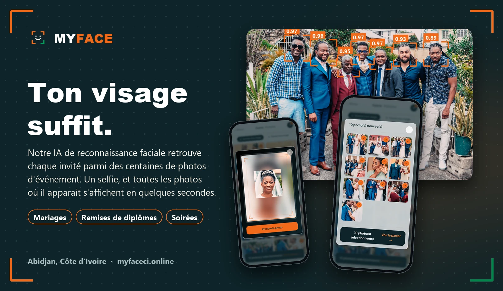
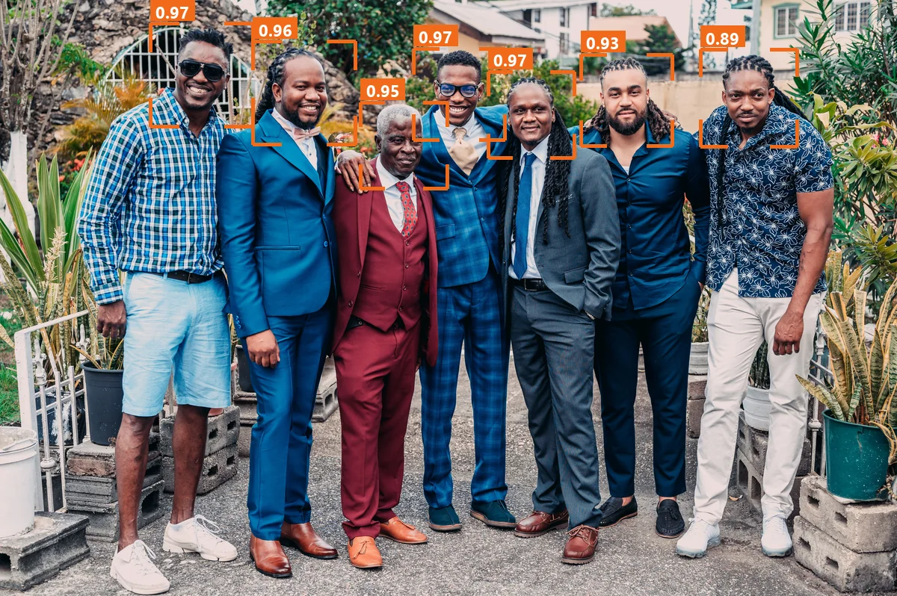
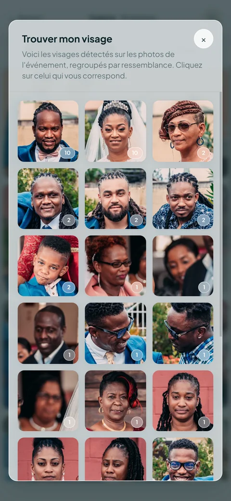
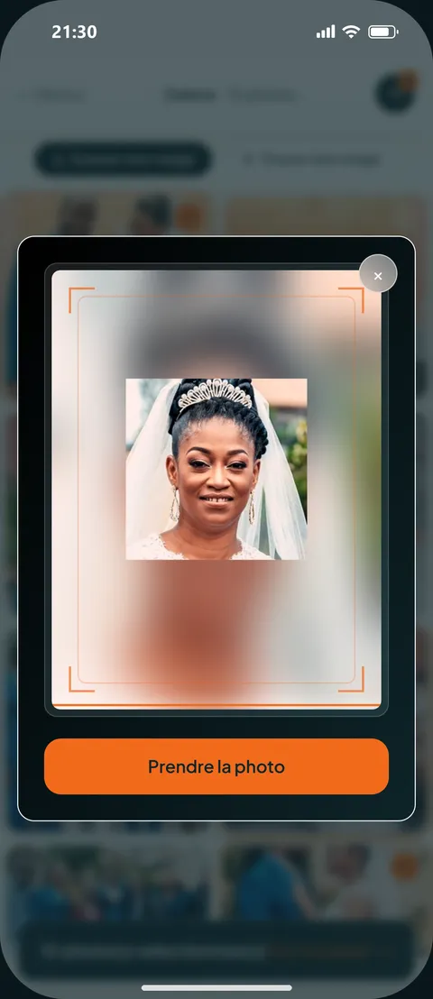
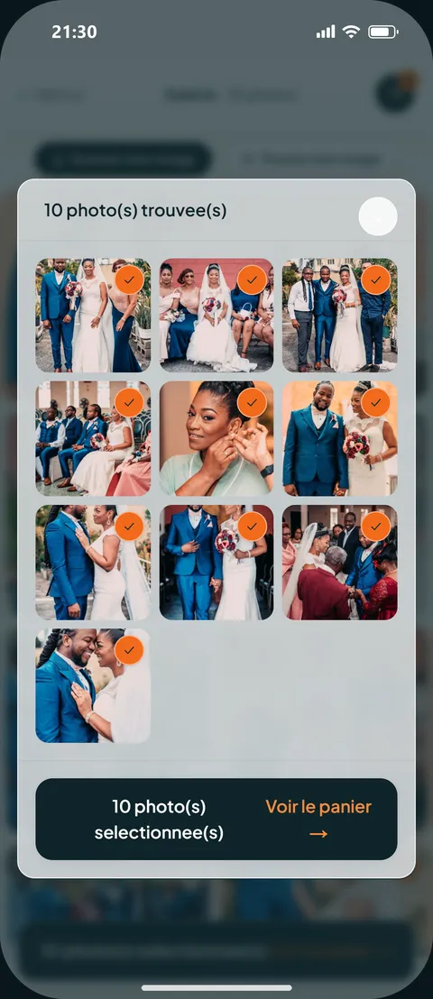
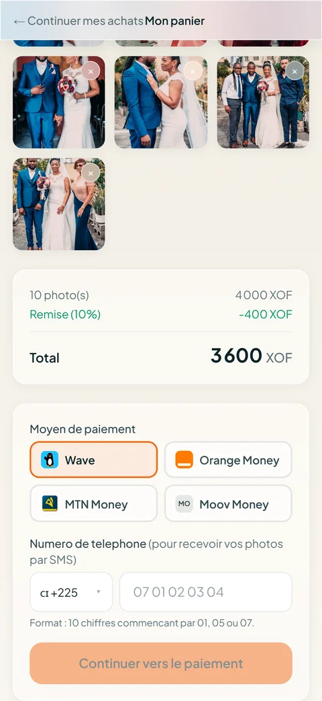
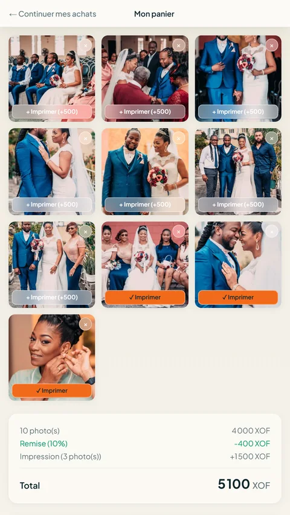

Projet · Événementiel · Intelligence artificielle
Une plateforme de distribution de photos d'événements par reconnaissance faciale. Dans un mariage ou une remise de diplômes, des centaines de photos sont prises : MYFACE les analyse, et chaque invité retrouve les siennes à partir d'un simple selfie, puis les achète par Mobile Money ou les imprime sur place.

Le problème
Après un mariage ou une cérémonie, les photos circulent mal : l'invité ne retrouve pas les siennes, et le photographe ne vend qu'une petite partie de son travail.
Les photos arrivent en vrac, compressées. Chacun fait défiler des centaines d'images pour se trouver, puis abandonne.
Le photographe imprime à l'avance et étale les tirages : les invités cherchent leur visage un par un, et beaucoup repartent sans rien.
Une photo qu'un invité ne voit pas est une photo qu'il n'achète pas. Le travail du photographe est peu valorisé.
Comment ça marche
Chaque photo passe par cinq étapes, du dossier du photographe jusqu'à la recherche par selfie.
Le photographe choisit un dossier de son ordinateur : chaque nouvelle photo part toute seule, et un sous-dossier devient une partie de l'événement (mairie, réception…). Le serveur produit l'aperçu filigrané et range l'original.
Next.js · FastAPI · Cloudflare R2
L'IA repère chaque visage de la photo, sur carte graphique. Les détections trop incertaines (voile, main, visage coupé) et les visages minuscules au fond sont écartées.
InsightFace SCRFD · ONNX Runtime GPU
Chaque visage devient une empreinte de 512 nombres : deux photos de la même personne donnent des empreintes proches, même avec un autre angle ou une autre lumière.
ArcFace · vecteurs 512 dimensions
L'invité prend un selfie : son empreinte est comparée à tous les visages de l'événement, et ses photos s'affichent en quelques secondes. Le selfie sert uniquement à la recherche, il n'est pas conservé.
PostgreSQL · pgvector · index HNSW
Sans selfie, « Trouver mon visage » montre une vignette par personne : les visages qui se ressemblent sont regroupés automatiquement, et le calcul est préparé à l'avance pour que l'invité n'attende jamais.
DBSCAN · scikit-learn
Ce que voit l'IA


Le parcours de l'invité
Rien à installer : tout se passe dans le navigateur du téléphone, ou sur la borne de l'événement.




Captures réalisées sur l'événement de démonstration (photos de banque d'images).
Pour qui
Retrouver toutes leurs photos en quelques secondes, les acheter en qualité originale et les télécharger ou les imprimer sur place.
Un espace MYFACE Pro pour gérer leurs événements, envoyer leurs photos, suivre et confirmer leurs ventes, avec des packs par événement.
Un QR code à afficher, une galerie protégée par mot de passe si besoin, et la possibilité d'offrir les photos aux invités.
Réalisation
Mon rôle : fondateur. Conception du produit, pipeline de vision par ordinateur, API, application web, espace photographe, borne d'impression, paiements Mobile Money, mise en production et tests de charge. MYFACE est en ligne et a été testé sur un événement de 1 300 photos.
Découvrir
Le site est en ligne, avec un événement de démonstration à essayer depuis votre téléphone. Le code source est privé ; je présente volontiers la plateforme en détail.